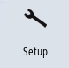

The operating software is available as standard in several languages.
Selecting a language
You can define the language selection mode using the following machine data.
MD9100 $MM_CHANGE_LANGUAGE_MODE | Language selection mode |
= 1 | The user-interface language is specified via the "Language Selection" window (default value). |
|  | 1. | Select the "Setup" operating area. |
 | 2. | Press the "Change language" softkey. The "Language selection" window opens. The language most recently set is highlighted. |
| | 3. | Switch the cursor to the required language. |
 | 4. | Press the <INPUT> key. |
| | | - OR - |
 | | Press softkey "OK". The operating software switches to the language selected. |
Defining two languages
MD9100 $MM_CHANGE_LANGUAGE_MODE | Language selection mode |
= 2 | Selection of two languages. During operation, the "Change language" softkey can be used to toggle between these languages. |
| | 1. | Select the "Setup" operating area. |
 | 2. | Press the "HMI" softkey. |
 | 3. | Press the ">>" softkey. |
| | 4. | Press the "Language selection" softkey.
The "Language selection" window opens. All the installed languages are displayed in the fields "First language" and "Second language". |
| | 5. | Select a language in each of these. |
| | 6. | Press the <INPUT> key. |
| | | - OR - |
| | | Press softkey "OK". |
| | | During operation, you can switch between the two languages by pressing the "Change language" softkey. |